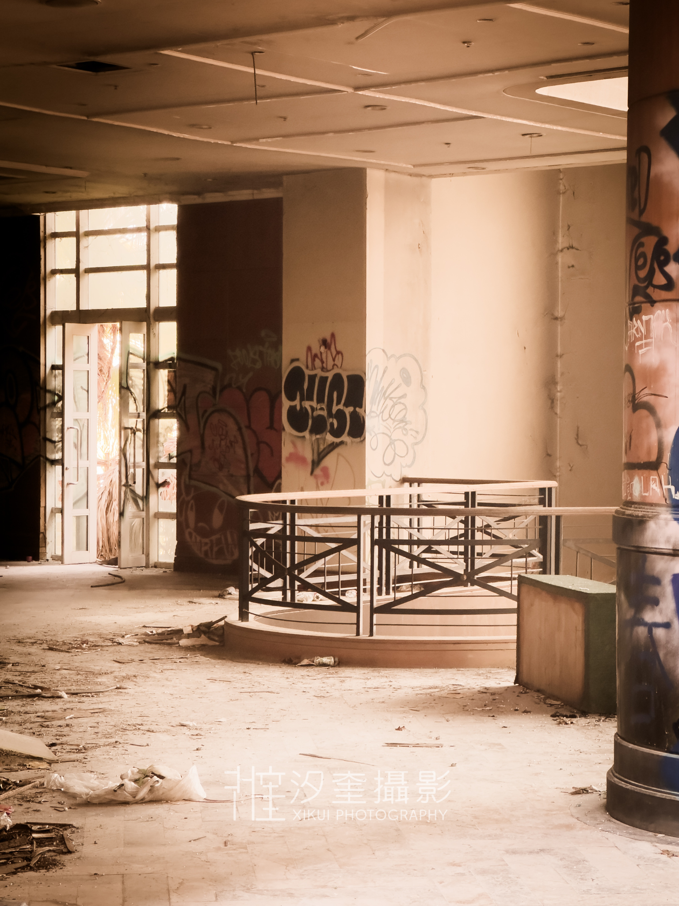

廢墟攝影 · 系列 02
地中海國際中心 · 新北市八里區
沿著八里海岸線行駛，這座藍白相間的圓頂建築在荒草中顯得格外突兀。曾經，這裡是無數新人許下誓言的地方，象徵著浪漫與繁華；如今，原本純淨的白色牆面已佈滿斑駁的鏽跡與水漬，那種「地中海式」的異國情調，在海風的侵蝕下，反而生出一種孤寂而壯麗的頹廢感。
踏入內部，原本挑高的宴會廳早已失去燈火，取而代之的是從破裂天窗灑落的自然光。這裡的魅力在於其建築的圓弧曲線與廢棄物之間的強烈對比——
在鏡頭下，地中海國際中心展現出一種「崩壞的精緻」。我試著捕捉那些被植被緩慢吞噬的窗框，以及那些逐漸模糊的希臘風格浮雕。廢墟攝影不只是記錄毀滅，更多的是在觀察人造建築如何回歸自然。
這座矗立在淡水河口的龐然大物，正以一種優雅的姿態老去。在它徹底消失之前，我用快門留下了這份凝結在鹹澀空氣中的藍調記憶。
